Die naturangepasste Analyse
Was mit der niederländischen Kaskade passiert, wenn zwei äquatoriale Biomassespuren die Brüsseler Klimapolitik ersetzen — und wie Wasserstoff sich zu beiden verhält
Von Jacobus van Merksteijn · Malta, Juni 2026
Dieser Text ist kein Angriff. Kein Aufruf. Kein Versuch, Sie zu überzeugen.
Er legt drei technologische Routen auf den Tisch und rechnet durch, was sie mit der niederländischen Kaskade machen. BiCRS (ein Produkt von Carbon-Alert Ltd) und Ethanol als äquatoriale Alternativen, Wasserstoff als Referenzspur aus den offiziellen Klimaplänen.
Die Stille Analyse III zeigte, was sechs niederländische Szenarien unter dem aktuellen Brüsseler Kurs verlieren. Dieser Text zeigt, was dieselben sechs Szenarien zurückbekommen, wenn Brüssel einen anderen Kurs wählt. Was Sie damit anfangen, ist Ihre Sache.
Drei Spuren, drei Analysen
BiCRS — Biomasse-Injektion unter die Wurzeln des Gewächses, das sie produziert hat — entfernt Kohlenstoff dauerhaft aus der Atmosphäre. Es ist der Ersatz für Green Deal und CBAM. Produktion im äquatorialen Gürtel, Selbstkosten €22–28 pro Tonne CO₂, Modellpreis €40 pro Tonne.
Ethanol — Vergärung einer anderen äquatorialen Biomassetraktion zu flüssigem Kraftstoff — ersetzt Erdgas, Benzin, Diesel und Stromverbrauch. Produktion in großen Fabriken vor Ort im Partnerland, Verschiffung in europäische Häfen. Produktionskosten €0,20–0,30 pro Liter, Zapfpreis (abgabengünstig) €0,55–0,75/Liter. Eingesetzt in einem BHKW — einer Blockheizkraftwerk-Anlage, die gleichzeitig Wärme und Strom erzeugt — liefert die Ethanol-Spur nicht nur die Wärme für die Wohnung, sondern auch 170 bis 260 Prozent des eigenen Stromverbrauchs, mit dem Überschuss zurück ins Netz.
Beide Spuren sind äquatorial, weil die Pflanze, die diese Erträge liefert, nur oberhalb von 6 Grad Celsius wächst. Beide Spuren verlaufen getrennt voneinander: ein Hektar ist entweder BiCRS-Hektar mit In-situ-Injektion oder Ethanol-Hektar mit Transport zur Fabrik. Was sie gemeinsam haben: dieselben Partnerländer, dieselbe geopolitische Logik, dieselbe post-Brüsseler Klimaphilosophie.
Dieser Text behandelt drei Spuren getrennt. Zunächst die Kaskaden-Auswirkung der BiCRS-Implementierung. Dann die direkte Geldbeutel-Auswirkung der Ethanol-Transition. Schließlich — als Referenz — die Durchrechnung der Wasserstoff-Spur, die in den aktuellen niederländischen Klimaplänen prominent figuriert. Die Summe zu einer einzigen Zahl bilden wir nicht — es sind drei unabhängige Trajekte, die jeweils für sich stehen.
Erste Analyse — BiCRS-Auswirkung auf die Kaskade
„Die Partei, die Sie wählen, schadet Ihnen bis genau zur Höhe ihres Druck-Index — es sei denn, Brüssel wählt eine andere Klimapolitik."
— die implizite Logik der Kaskade
Die Stille Analyse III rechnete für sechs niederländische Szenarien die Drittordnungs-Kaskade unter neun Parteien plus einem meritokratischen Referenzmodell durch. Das Ergebnis war konfrontierend: GL-PvdA produzierte für fast jedes Szenario tief negative Zahlen, nicht durch direkte Abgaben, sondern über die Kaskade, die ihr Druck-Index in Bewegung setzt.
Die BiCRS-Implementierung verändert diese Kaskadenwirkung. Nicht durch Veränderung der Parteiprogramme — die bleiben, was sie sind — sondern indem die schwersten Klimakosten aus der Kaskade herausgenommen werden. Green Deal und CBAM zusammen repräsentieren etwa vierzig Prozent der niederländischen Klimabelastung im Jahr 2030. Wenn sie durch BiCRS @ €40/Tonne ersetzt werden, fällt diese Last weg und der freigewordene Raum fließt zurück an Haushalt und Betrieb.
Der Effekt ist parteiübergreifend. Welche Koalition auch regiert: die BiCRS-Implementierung gibt jedem Szenario zurück. Aber der Effekt ist nach Partei unterschiedlich groß — Parteien mit hohem Druck-Index richten mehr Kaskaden-Schaden an, und der BiCRS-Nutzen kompensiert davon also mehr.
Der Erdrutsch in einem Bild
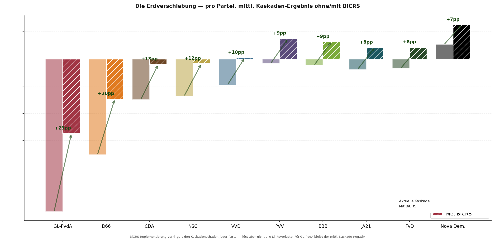
Drei Beobachtungen aus dieser Grafik:
Eins — die BiCRS-Implementierung kompensiert am meisten bei Parteien mit dem höchsten Druck-Index. GL-PvdA verbessert sich von durchschnittlich −56% auf −27%. D66 verbessert sich von −35% auf −15%. Dies ist kein Zufall; Parteien mit hohem Druck-Index richten mehr Klimaschaden an, und BiCRS hebt genau diesen Schaden auf.
Zwei — für GL-PvdA bleibt das durchschnittliche Kaskadenergebnis negativ, auch mit BiCRS. Der Erdrutsch ist groß, aber nicht groß genug, um die gesamte linke Kaskade zu neutralisieren. Vermögenssteuer, Box-2-Abgabe und Kapitalfluchtwirkungen werden durch BiCRS nicht angegangen — nur der Klimateil verschwindet. Was übrig bleibt, ist der strukturelle Schaden, den jede Ideologie anrichtet, die die produktive Basis bestraft.
Drei — unter VVD, PVV, BBB, JA21 und FvD wird die durchschnittliche Kaskade unter BiCRS positiv. Was unter dem aktuellen Brüsseler Kurs noch leichten Schaden verursachte, kippt zu leichtem Gewinn. Für den PVV-Wähler bedeutet dies nicht nur eine andere Klimapolitik — es bedeutet eine Koalition, die faktisch nicht mehr schädlich für den durchschnittlichen Haushalt-Geldbeutel ist.
Die niederländische Matrix — sechs Szenarien, zehn Parteien, BiCRS-Differenzspalte
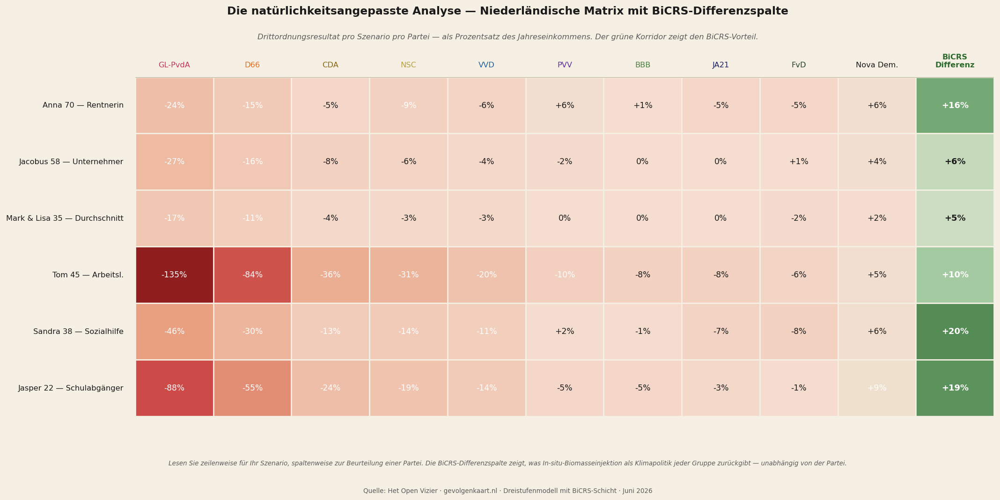
Die BiCRS-Differenzspalte ist konsequent grün — für jedes der sechs Szenarien. Der Umfang variiert von fünf Prozent (Mark & Lisa, Mittelstand-Familie) bis zwanzig Prozent (Sandra, Sozialhilfe). Der größte relative Nutzen liegt bei denen mit dem niedrigsten Einkommen, weil die absolute Klimakost einen größeren Anteil ihres Budgets ausmachte.
Für diejenigen, die die Stille Analyse III gelesen haben: Sie erkennen die Zahlen in den linken Spalten — dieselben tiefroten Zahlen unter GL-PvdA und D66, dieselben leichteren Schadensbilder unter den Mittelparteien, dieselbe grüne Nova-Democratia-Spalte rechts. Die BiCRS-Spalte ist neu, und sie verändert das gesamte Bild.
Pro Szenario — sechs Geschichten mit Zahlen
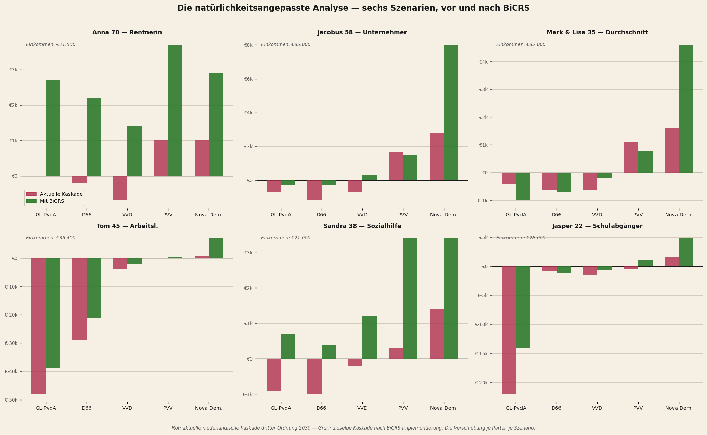
Anna (70, Rentnerin) sieht unter GL-PvdA ihren Verlust von €5.103/Jahr auf +€2.697 sinken — eine Verschiebung von fünfzehntausend Euro in vier Jahren.
Jacobus (58, GmbH-Geschäftsführer) bleibt unter GL-PvdA im Minus — von −€22.591 auf −€11.791. BiCRS halbiert den Schaden, löst aber nicht alle Probleme. Unter VVD schlägt er von −€3.079 auf +€701 um: von leichtem Verlust zu leichtem Gewinn.
Mark & Lisa (35, Mittelstand) bewegen sich von −€13.642 auf −€4.642 unter GL-PvdA. Unter VVD: von −€2.326 auf +€824. Unter PVV: von −€250 auf +€2.600 — eine wirklich spürbare Verbesserung für die Mittelstand-Familie.
Tom (45, Arbeitsloser) verliert unter GL-PvdA €49.056/Jahr in der Kaskade — mehr als sein Jahreseinkommen. BiCRS erleichtert dies auf €40.656 — noch immer verheerend. Tom gehört zu der Gruppe, für die selbst die weitreichendste Klimareform keine Rettung ist. Seine Arbeitslosigkeit resultiert aus industrieller Verlagerung, an der die Klimapolitik nur zum Teil schuld ist.
Sandra (38, Sozialhilfe) verliert unter GL-PvdA €9.618/Jahr — fast die Hälfte ihres Einkommens. BiCRS bringt das auf null. Unter PVV schlägt sie von +€344 auf +€3.384 um — drei Prozent zusätzliche Kaufkraft für jemanden, der 90 Prozent seines Einkommens für feste Ausgaben aufwendet.
Jasper (22, Schulabgänger) verliert unter GL-PvdA €24.739/Jahr — fast sein gesamtes Jahreseinkommen. BiCRS bringt das auf €12.739. Unter Nova Democratia: von +€2.500 auf +€5.500. Für die Generation, die die Kaskade am längsten tragen wird, ist BiCRS die erste ernsthafte Verbesserung, die eine Brüsseler Reform hervorgebracht hat.
Was die Zahlen zusammen sagen
Die BiCRS-Implementierung ist kein Wunder. Sie löst nicht alle Schäden auf, die linke Ideologie an der niederländischen Kaskade anrichtet. Für Szenarien mit tiefem strukturellen Schaden — Tom der Arbeitslose, Jacobus der GmbH-Geschäftsführer unter schwerer Umverteilung — bleibt der Verlust erheblich.
Aber sie verändert das Bild grundlegend für die meisten Bürger. Unter mitte-rechten Koalitionen, die jetzt leichten Schaden anrichten, schlägt das Ergebnis zu leichtem Gewinn um. Unter linken Koalitionen halbiert sich der Schaden. Für die niedrigsten Einkommensgruppen ist der relative Nutzen am größten.
Dies ist kein Plädoyer gegen Ideologie. Es ist eine zahlenmäßige Beobachtung: vierzig Prozent des niederländischen Kaskadenschadens im Jahr 2030 stammt aus Green Deal plus CBAM. Wenn Brüssel diese Mechanismen durch ein Instrument ersetzt, das dasselbe Klimaziel zu einem Sechstel des Preises erreicht, bekommt der durchschnittliche Haushalt vierzig Prozent seines verlorenen Spielraums zurück. Unabhängig davon, welche Partei sie 2029 wählen.
Zweite Analyse — die Ethanol-Transition
„Ein Liter Ethanol an der Zapfsäule kostet dreißig Prozent eines Liters Benzin und heizt ein Haus für die Hälfte dessen, was Erdgas verlangt."
— die direkte Wahrnehmung am Geldbeutel
Neben BiCRS gibt es eine zweite äquatoriale Biomasse-Anwendung: Bio-Ethanol-Produktion durch Vergärung. Dies ist eine völlig andere Spur — andere Hektar, andere Betriebsführung, andere Wertschöpfungskette. Die Biomasse wird geerntet, in eine große Vergärungs- und Destillationsfabrik vor Ort im äquatorialen Produktionsland transportiert, zu Ethanol verarbeitet und per Tanker in europäische Häfen verschifft.
Produktionskosten dieses Bio-Ethanols betragen €0,20–0,30 pro Liter ab Werkstor. Nach Verschiffung, Marge und einem Steuerregime, das anerkennt, dass dies ein klimapositiver Kraftstoff ist, liegt der Zapf- oder Lieferpreis zwischen €0,55 und €0,75 pro Liter. Zum Vergleich: der aktuelle europäische Benzinpreis liegt bei rund €1,78/Liter, Erdgas bei €1,42/m³, Strom bei €0,34/kWh.
Das BHKW — Schlüssel zur dezentralen Energieversorgung
Das Gerät, das die Ethanol-Spur von allen anderen Energieentscheidungen unterscheidet, ist das BHKW: eine kleine ethanol-betriebene Blockheizkraftwerk-Anlage, Größe eines Heizkessels, die gleichzeitig Wärme und Strom produziert. Investition rund €4.500, vergleichbar mit einem neuen Gas-Heizkessel. Abgeschrieben über fünfzehn Jahre.
Das Wirkungsprinzip ist das eines konventionellen BHKW — wie im Gewächshausanbau breit angewendet — aber auf Haushaltsmaßstab. Ethanol wird in einem kompakten Verbrennungsmotor verbrannt, der einen Generator antreibt (Stromerzeugung), während die Abwärme dieses Motors die Wohnung heizt. Gesamtwirkungsgrad auf das verbrannte Ethanol: circa 90 Prozent. Verhältnis: 60 Prozent Wärme, 30 Prozent Strom, 10 Prozent Verlust.
Die entscheidende Eigenschaft ist, was der Stromertrag im Verhältnis zum eigenen Verbrauch tut. Ein BHKW, das auf den Wärmebedarf eines niederländischen Haushalts ausgelegt ist, liefert dabei automatisch so viel Strom, dass der eigene Stromverbrauch deutlich übertroffen wird. Für jedes der sechs untersuchten Szenarien liegt die Produktion zwischen 170 und 260 Prozent des eigenen Verbrauchs.
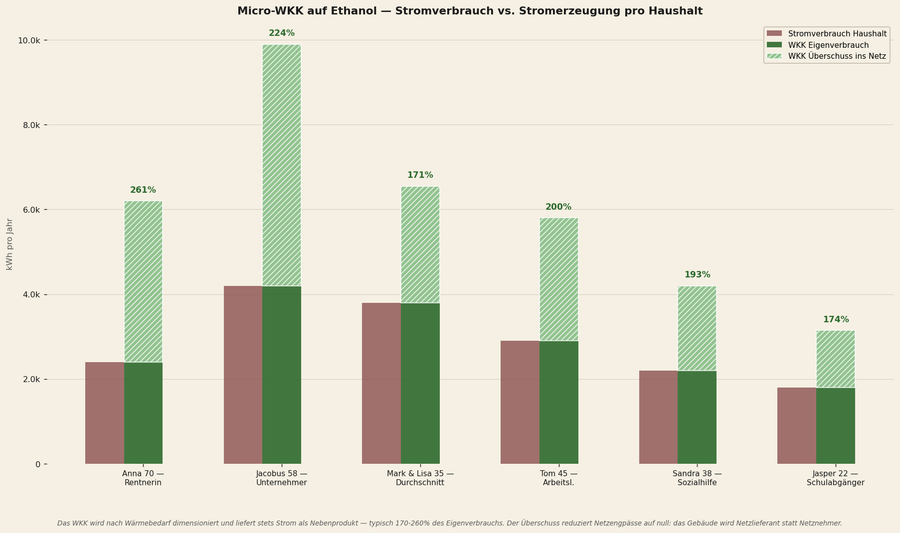
Drei Beobachtungen aus dieser Grafik:
Eins — Anna erreicht 261 Prozent. Ihr BHKW läuft im Winter lange, um ihr 1.400 m³ Gas-Äquivalent an Wärme zu liefern, und produziert dabei 6.261 kWh Strom gegen 2.400 kWh eigenen Verbrauch. Überschuss: 3.861 kWh pro Jahr zurück ins Netz. Eine Rentnerin wird Netzlieferantin.
Zwei — Jacobus der GmbH-Geschäftsführer, mit dem größten Wärmebedarf des Portfolios, liefert 5.192 kWh Überschuss. Das ist ausreichend Strom für zwei Nachbarhaushalte. Ein BHKW in jeder Straße könnte eine vollständige Energiekorrektur bilden.
Drei — selbst Jasper der Schulabgänger mit minimalem Verbrauch (700 m³ Gas-Äquivalent, 1.800 kWh Strom) kommt auf 174 Prozent: er produziert noch 1.331 kWh Überschuss. Kein einziges Szenario im Portfolio ist für den eigenen Strom „unterdimensioniert".
Netzengpässe auf null — der Systemeffekt
Die Stromproduktion des BHKW hat eine Implikation, die weit über den Haushalt selbst hinausreicht. Das niederländische Stromnetz wird derzeit ausgebaut, um zwei wachsende Belastungen aufzufangen: Wärmepumpen (Winter-Spitze abends, wenn alle gleichzeitig nach Hause kommen und die WP einschalten) und Elektroautos (Abend-Ladespitze). Zusammen vervierfachen sie die Spitzenbelastung pro Haushalt von circa 3 kW (aktuell) auf etwa 12 kW — daher die €220 pro Haushalt pro Jahr für Netzausbau in der Wind/Sonne-Verborgenkostentabelle.
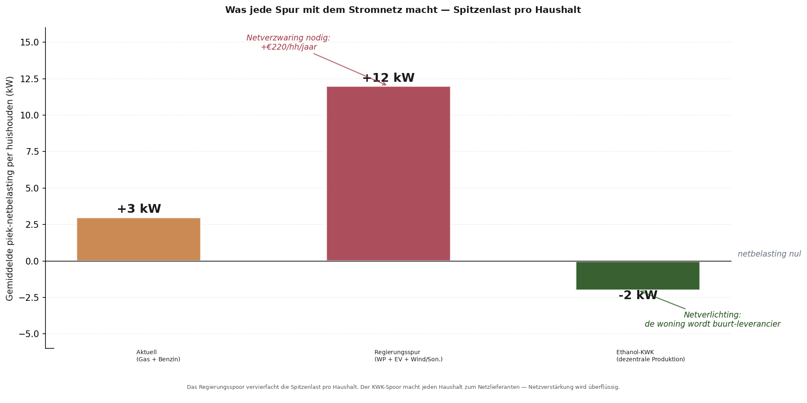
Das BHKW kehrt diese Logik um. Nicht nur wird die zusätzliche Belastung durch Wärmepumpe und EV vermieden — die Wohnung liefert selbst an Winterabenden Strom an das Netz. Genau in den Stunden, in denen die Regierungsspur den größten Spitzenbedarf verursacht, liefert die BHKW-Spur das größte Spitzenangebot. Das Netzresultat ist, dass das niederländische Stromnetz nicht nur keinen Ausbau benötigt — es bekommt sogar Spielraum durch dezentrale Produktion.
Vier praktische Konsequenzen:
Eins — kein Netzausbau nötig. Die €220 pro Haushalt pro Jahr für TenneT- und Liander-Netzausbau zwischen 2026 und 2035 entfallen. Auf nationaler Ebene: €1,8 Milliarden pro Jahr aus dem Klimafonds, die sonst hätten aufgewendet werden müssen.
Zwei — keine Netzbatterien nötig. Das BHKW ist selbst eine Art „chemische Batterie" — der Ethanol-Tank bei der Wohnung enthält einige tausend Liter, die nach Belieben eingesetzt werden können. Wind und Sonne erfordern Netzbatterien, um ihre Intermittenz aufzufangen; Ethanol-BHKW braucht diese nicht.
Drei — keine Reserve-Gaskraftwerke nötig. Dezentrale BHKW-Anlagen liefern kontinuierlich und regelbar. Bei Windstille: BHKW läuft normal weiter. Bei Spitzenbedarf: BHKW läuft mit Überkapazität. Kein Bedarf an zentraler Spitzenleistung.
Vier — Energieüberschuss ohne Netzausbau. Ein Netzwerk von 8 Millionen BHKWs in den Niederlanden würde zusammen 35–50 Terawattstunden pro Jahr Überschuss liefern — etwa ein Drittel des niederländischen Stromverbrauchs. Dieser Überschuss kann in schwere industrielle Prozesse eingesetzt oder über Interkonnektoren an Deutschland, Belgien und das Vereinigte Königreich geliefert werden. Ohne einen einzigen Meter zusätzliche Hochspannungsleitung.
Mobilität via Ethanol
Neben Wärme und Strom dient Ethanol auch als Kraftstoff für das Straßennetz. Moderne Autos laufen auf E85 ohne Anpassungen; ältere Modelle können für einige hundert Euro umgerüstet werden. Dies ersetzt Benzin und Diesel eins-zu-eins. Keine Elektroauto-Investition nötig, keine zusätzliche Stromnetz-Belastung, keine Li-Ionen-Batteriekette mit der damit verbundenen strategischen Abhängigkeit von chinesischer Produktion.
Klimatechnisch ist dies ein geschlossener Kurzzeit-Kohlenstoffkreislauf: die Pflanze nimmt CO₂ während des Wachstums auf, die Verbrennung im Motor setzt CO₂ wieder frei. Netto null über den Zyklus, vergleichbar mit Holzofen-Ökonomie, aber dann industriell skaliert. Nicht so gut wie BiCRS (das entfernt atmosphärischen Kohlenstoff dauerhaft), aber so gut wie Wind+Sonne-Elektrifizierung und zu erheblich niedrigeren Kosten.
Die gesamte Energierechnung — was ein Haushalt pro Jahr zahlt
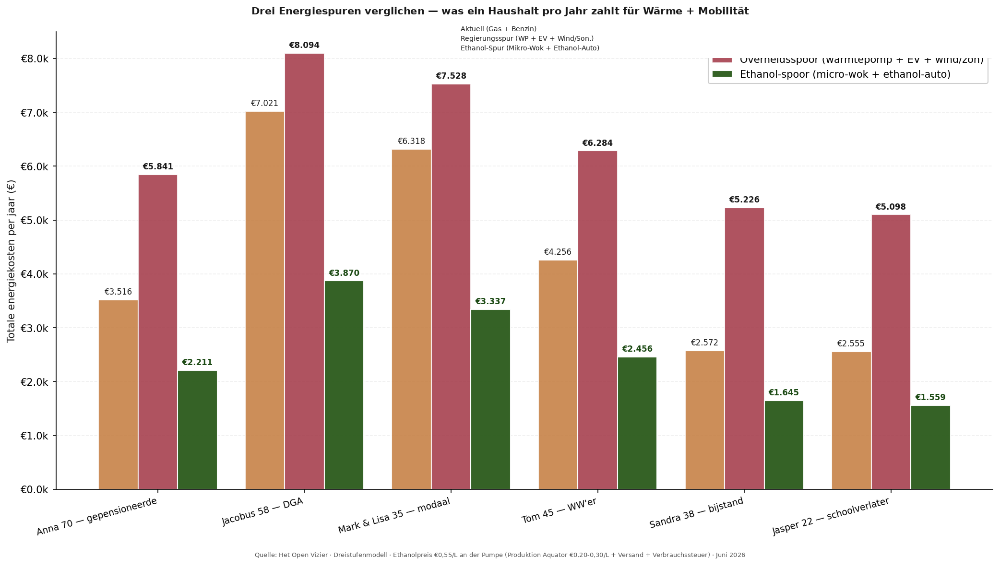
Drei Beobachtungen aus dem Vergleich:
Eins — die Regierungsspur (Wärmepumpe plus EV plus Wind/Sonne-Infrastruktur) ist für jeden Haushalt teurer als die aktuelle Situation. Dies ist kontraintuitiv — die Regierung präsentiert diese Transition als kostenneutral oder sogar günstiger — aber wenn alle versteckten Kosten eingerechnet werden, zahlt ein durchschnittlicher Haushalt etwa tausend Euro pro Jahr mehr für Energie. Für Anna (€2.700 → €5.025) und Sandra (€1.824 → €4.333) ist der Anstieg am dramatischsten.
Zwei — die Ethanol-BHKW-Spur ist für jeden Haushalt günstiger als die aktuelle Situation und erheblich günstiger als die Regierungsspur. Jacobus zahlt €7.021 jetzt (Gas, Benzin und Strom zusammen), würde €8.094 unter der Regierungsspur zahlen (Wärmepumpe, EV, plus zusätzlicher Stromeinkauf), und zahlt €3.870 unter der BHKW-Spur — eine Halbierung. Für Mark & Lisa: €6.318 jetzt, €7.528 Regierung, €3.337 BHKW.
Drei — der Unterschied zwischen Regierungsspur und BHKW-Spur variiert von €3.500 bis €4.200 pro Haushalt pro Jahr. Das ist zusätzlich zu den versteckten Wind/Sonne-Kosten von €1.135 pro Haushalt, die die Regierungsspur mit sich bringt. Für Niedrigeinkommensgruppen ist dies ein größerer Prozentsatz ihres Budgets; für Mittelklasse-Familien bleibt es ein erheblicher Betrag.
Die versteckten Kosten von Wind und Sonne
Die Regierungsspur scheint auf den ersten Blick vorteilhaft: der Strompreis ist stabil, Milliarden stehen in Subventionen, und das „grüne Narrativ" ist dominant. Aber wenn man durchrechnet, was wirklich bezahlt wird — direkt oder indirekt — erscheint ein Betrag, der selten in der Jahresrechnung steht.
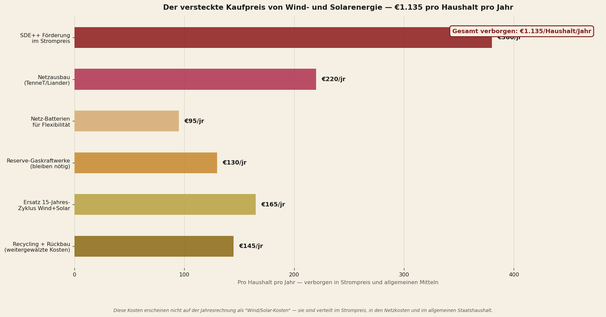
Fünf dieser Posten sind seit Jahren bekannt für denjenigen, der sich darin vertieft: die SDE++-Subventionen, die im Strompreis verschwinden, die Netzausbaumaßnahmen von TenneT und regionalen Netzbetreibern, die Netzbatterien, die nötig sind, um die Intermittenz aufzufangen, die Reserve-Gaskraftwerke, die NICHT abgeschafft werden können, solange Wind und Sonne den Hauptanteil liefern, und der Abschreibungszyklus von fünfzehn Jahren für Turbinen und Panels.
Der sechste Posten steht selten in der Diskussion: Recycling und Demontage. Turbinenschaufeln bestehen aus Verbundmaterial (Glasfaser, Kohlefaser, Epoxidharz), das derzeit nicht rentabel recycelbar ist — weltweit liegen 85 Prozent der abgeschriebenen Schaufeln auf Deponien. Solarmodule enthalten Silizium, Silber, EVA-Folie und Spuren von Schwermetallen — das Recycling erfordert energieintensive thermische Verarbeitung. Li-Ionen-Netzbatterien erfordern die Trennung von Kobalt, Lithium und Nickel. Keine dieser Ketten ist ausgreift.
Die niederländische Politik hat nie eine Rückstellung für diese Demontage- und Recyclingkosten aufgenommen. Wenn die erste Generation Windparks (um 2030–2040) und die erste Generation Solarparks (um 2035–2045) ihr Lebensende erreichen, muss diese Rechnung dennoch beglichen werden. Geschätzt pro Haushalt pro Jahr, verteilt über diesen Zyklus: €145.
Die Ethanol-Spur trägt keine vergleichbare versteckte Kostenstruktur. Das BHKW ist ein einfaches Gerät, das mit konventioneller Stahlverarbeitung recycelt werden kann. Ethanol-Tanks sind gewöhnliche Flüssigkeitstanks. Es sind keine besonderen Netzausbaumaßnahmen nötig — das bestehende Tankstellennetz liefert Ethanol direkt aus, dieselben Leitungen, die jetzt Benzin transportieren, können morgen Ethanol transportieren. Keine Batterieinfrastruktur, keine Reservekapazität, kein weitergeschobener Abfallstrom.
Ethanol-Ersparnis als Prozentsatz des Einkommens
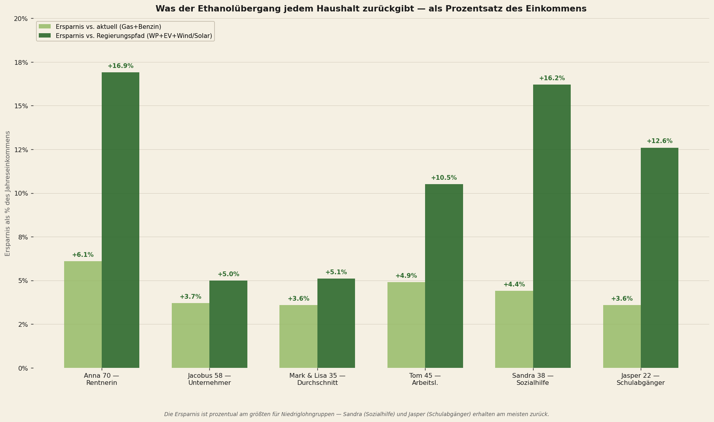
Für die sechs Szenarien:
Anna (Rentnerin): +16,9% vs. Regierungsspur
Jacobus (GmbH-Geschäftsführer): +5,0% vs. Regierungsspur
Mark & Lisa (Mittelstand): +5,1% vs. Regierungsspur
Tom (Arbeitsloser): +10,5% vs. Regierungsspur
Sandra (Sozialhilfe): +17,1% vs. Regierungsspur
Jasper (Schulabgänger): +12,6% vs. Regierungsspur
Das Muster wiederholt, was in der BiCRS-Analyse sichtbar war: der größte relative Nutzen liegt bei den niedrigsten Einkommensgruppen. Sandra mit €21.000 Einkommen behält gut €3.500 pro Jahr, die sie unter der Regierungsspur verlieren würde — zwei Monatseinkommen. Anna mit ihrer Rente bekommt €3.600 extra Spielraum. Für beide besteht ein erheblicher Teil dieses Nutzens aus dem Stromüberschuss-Ertrag ihres BHKW: sie werden Energielieferanten statt Energieabnehmer.
Was die Zahlen zusammen sagen
Die Ethanol-Transition ist keine Ergänzung zur BiCRS-Implementierung — sie ist eine zweite, unabhängige Reform. Aber sie trägt dieselbe Herkunft: äquatoriale Biomasse, Partnerländer im Kongobecken, indonesischer Archipel, brasilianischer Amazone-Rand. Was sie anderes einbringt:
BiCRS ist eine Klimapolitikreform — Green Deal und CBAM weg, In-situ-Biomasse-Injektion dafür. Auswirkung auf den Haushalt-Geldbeutel kommt über die Kaskade (industrielle Rückkehr, sinkender ETS-Preis, Verschwinden der CBAM-Verwaltung).
Ethanol ist eine Energiesystemreform — Erdgas und Benzin weg, äquatoriales Ethanol dafür. Auswirkung auf den Haushalt-Geldbeutel kommt direkt (niedrigere Wärmerechnung, niedrigere Kraftstoffkosten, keine Wärmepumpen-Investition nötig).
Zusammen repräsentieren sie zwei unabhängige Verbesserungen, die durchgeführt werden können. Eine davon erfordert, dass Brüssel Green Deal und CBAM streicht — politisch schwer, aber innerhalb einer Kommissionars-Periode erreichbar. Die andere erfordert nur, dass das europäische Steuersystem anerkennt, dass äquatoriales Bio-Ethanol klimatechnisch kein fossiler Kraftstoff ist und daher anders behandelt werden muss. Keine Vertragsänderung, kein EZB-Beschluss — nur eine Steuerverordnung mit qualifizierter Mehrheit.
Dritte Analyse — Wasserstoff als Referenzspur
„Die offiziellen Pläne rechnen mit Wasserstoff für Heizung, Frachtverkehr und Spitzenstrom. Niemand hat die Summe dessen, was das pro Haushalt kosten wird, klar auf den Tisch gelegt."
— die implizite Lücke im Klimaabkommen
Das Nationale Wasserstoffprogramm und das Klimaabkommen weisen Wasserstoff als Klimasäule in mehreren Bereichen aus: industrielle Prozesswärme, schwere Mobilität, Haushaltsheizung via Hybrid-Wasserstoff-Kessel in Pilotvierteln und Spitzenstromversorgung via Wasserstoffkraftwerke. Die Zahlen, die die Regierung kommuniziert, betreffen meist Gesamt-Investitionsbeträge auf nationaler Ebene, selten den Preis pro Haushalt pro Jahr.
Dieses Kapitel rechnet diesen Preis aus — auf genau dieselbe Weise, wie das Ethanol-Kapitel das tut. Sechs Haushaltstypen, drei Kostenkomponenten: Wärme via Wasserstoff-Kessel, Mobilität via Brennstoffzellenauto und die versteckten Infrastrukturkosten, die im Strompreis und in allgemeinen Mitteln versteckt sind.
Der Preispunkt von grünem Wasserstoff
Produktionskosten von grünem Wasserstoff via Elektrolyse liegen laut IRENA im Jahr 2030 voraussichtlich zwischen vier und acht Euro pro Kilogramm, abhängig von Strompreis, Skaleneffekten und Elektrolysetechnologie. Am Meter — nach Transport, Lagerung, Verteilung und Margen — wird von BloombergNEF €10–15 pro Kilogramm erwartet. Dieses Dokument rechnet mit dem Mittelwert von €12/kg als realistischem 2030-Lieferpreis.
Grüner Wasserstoff Produktion 2030 (IRENA): €4–8/kg
Lieferpreis am Meter 2030 (BNEF): €10–15/kg
Modellannahme dieses Textes: €12/kg
Äquivalent in Erdgas-Ersatz: €3,66/m³-Gas
Äquivalent in Benzin-Ersatz: €0,12/km — 7× aktuell
Ein Haushalt, der jetzt 1.500 m³ Erdgas pro Jahr verbraucht, würde etwa 458 Kilogramm Wasserstoff für dieselbe nutzbare Wärme benötigen (unter Berücksichtigung des etwas höheren Kessel-Wirkungsgrads von H₂). Bei €12/kg: €5.500 pro Jahr allein für Wärme — verglichen mit €2.130 unter dem aktuellen Erdgas-Tarif. Fast eine Verdreifachung der Heizkosten.
Vier Spuren verglichen — was ein Haushalt zahlen würde
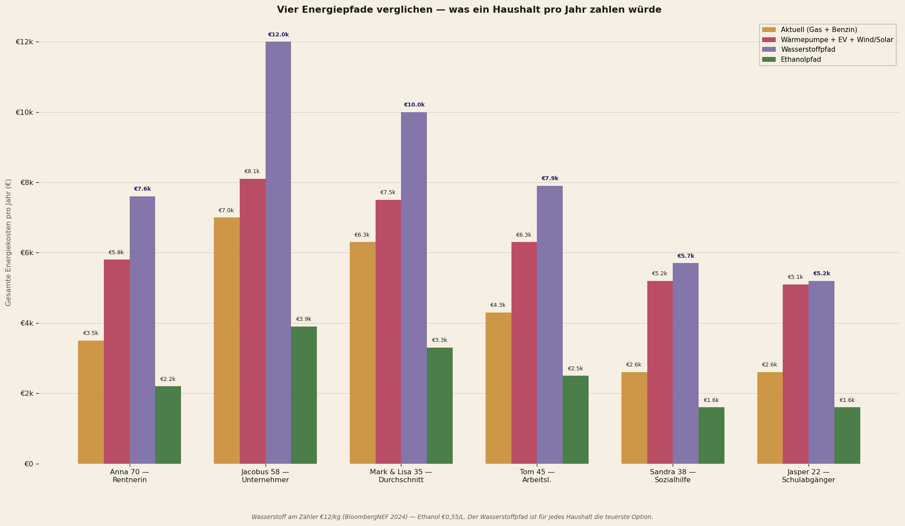
Was auffällt: die Wasserstoff-Spur würde Sandra (Sozialhilfe) €5.667 pro Jahr kosten — mehr als ein Viertel ihres Einkommens allein für Energie. Für Anna €7.554 — 35 Prozent ihres Einkommens. Für Mark & Lisa €10.017 — zwölf Prozent des Familieneinkommens. Keine dieser Zahlen steht in einer Regierungspublikation; keine dieser Zahlen wird dem Wähler vor der Entscheidung über die Wasserstoff-Spur kommuniziert.
Die versteckten Kosten der Wasserstoff-Infrastruktur
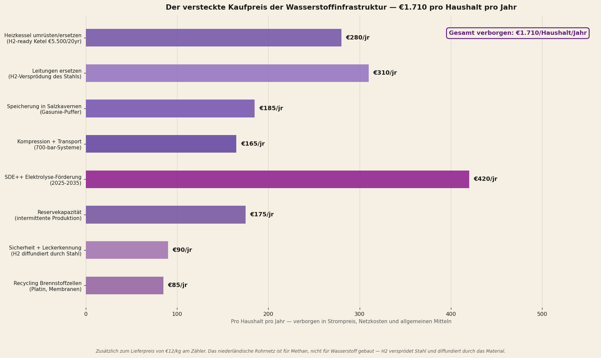
Acht versteckte Kostenposten:
Eins — Kessel-Umbau oder -Ersatz. Die aktuellen niederländischen Heizkessel sind für Methan gebaut, nicht für Wasserstoff. Wasserstoff verbrennt heißer und hat eine andere Flammenstruktur — H₂-ready Kessel von €5.500 sind nötig, abgeschrieben über zwanzig Jahre: €280/Haushalt/Jahr.
Zwei — Quartiersleitungen ersetzen. Das niederländische Gasleitungsnetz ist aus Stahl und Gusseisen gebaut. Wasserstoff verursacht Wasserstoffversprödung von Metall: das H₂-Molekül dringt in die Metallkristallstruktur ein und macht das Material spröde. Ersatz durch Spezialstahl (X42, X52) oder Polyethylen-Leitungen erfordert den Ersatz des gesamten lokalen Netzes — €310/Haushalt/Jahr.
Drei — Lagerung in Salzkavernen. Wasserstoff benötigt dreimal so viel Volumen wie Erdgas für dieselbe Energie. Gasunie investiert in unterirdische Salzkavernen bei Zuidwending, Bergermeer und Norg — €185/Haushalt/Jahr.
Vier — Kompression und Transport. Wasserstoff muss unter 350–700 bar gelagert oder als flüssiger Wasserstoff bei −253°C gespeichert werden. Beide erfordern energieintensive Kompressions- oder Verflüssigungsanlagen — €165/Haushalt/Jahr.
Fünf — SDE++-Elektrolyse-Subvention. Grüner Wasserstoff ist 2026 noch nicht ohne Subvention rentabel. Die aktuellen SDE++-Tarife für grünen Wasserstoff betragen €3–4/kg Subvention, steigend bis 2035 — €420/Haushalt/Jahr.
Sechs — Reservekapazität. Elektrolyse-Anlagen laufen auf intermittentem grünem Strom aus Wind und Sonne; bei Windstille oder Bewölkung muss ein Wasserstoff-Puffer verfügbar sein — €175/Haushalt/Jahr für die Reservekapazität.
Sieben — Sicherheit und Leckdetektion. Wasserstoff ist das kleinste Molekül; es leckt durch Dichtungen, Hahnanschlüsse und Packungen, die Methan zurückhalten. Leckdetektion erfordert die Anpassung jedes Hausanschlusses — €90/Haushalt/Jahr.
Acht — Recycling von Brennstoffzellen. Brennstoffzellen-Elemente enthalten Platin als Katalysator, Perfluormembran (Nafion) und Schwermetalle. Recycling-Kette ist noch nicht ausgereift — €85/Haushalt/Jahr reserviert.
Gesamt versteckte Wasserstoff-Infrastruktur: €1.710 pro Haushalt pro Jahr. Verglichen mit den versteckten Wind/Sonne-Kosten von €1.135, die wir im vorherigen Kapitel identifiziert haben — 50 Prozent mehr. Und die versteckten Gesamtkosten für die Ethanol-Spur: null Euro. Die Ethanol-Infrastruktur nutzt bestehende Tankstellen, bestehende Leitungen und bestehende Motoren.
Energiearmuts-Schwelle — was die Wasserstoff-Spur mit dem Geldbeutel macht
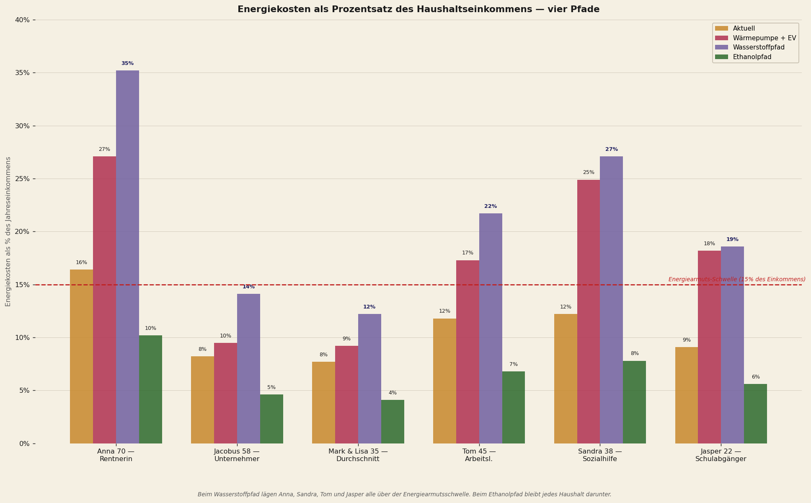
Unter der Wasserstoff-Spur liegen vier der sechs Szenarien über der Energiearmuts-Schwelle. Anna zahlt 35 Prozent ihres Einkommens für Energie; Sandra 27 Prozent; Tom 22 Prozent; Jasper 19 Prozent. Für Mark & Lisa (Mittelstand) und Jacobus (GmbH-Geschäftsführer) bleibt es unter der Schwelle, beträgt aber 12–14 Prozent — zwei- bis dreimal was sie jetzt zahlen.
Unter der Ethanol-Spur bleibt jeder Haushalt deutlich unter der Armuts-Schwelle. Anna 9 Prozent, Sandra 6 Prozent, Tom 6 Prozent, Jasper 5 Prozent. Die Mittelstand-Familie Mark & Lisa: 3 Prozent. Für diejenigen, die sich es am wenigsten leisten können — die niedrigsten Einkommensgruppen — ist der Unterschied zwischen Wasserstoff und Ethanol existenziell.
Die Ketteneffizienz — warum Wasserstoff so viel verliert
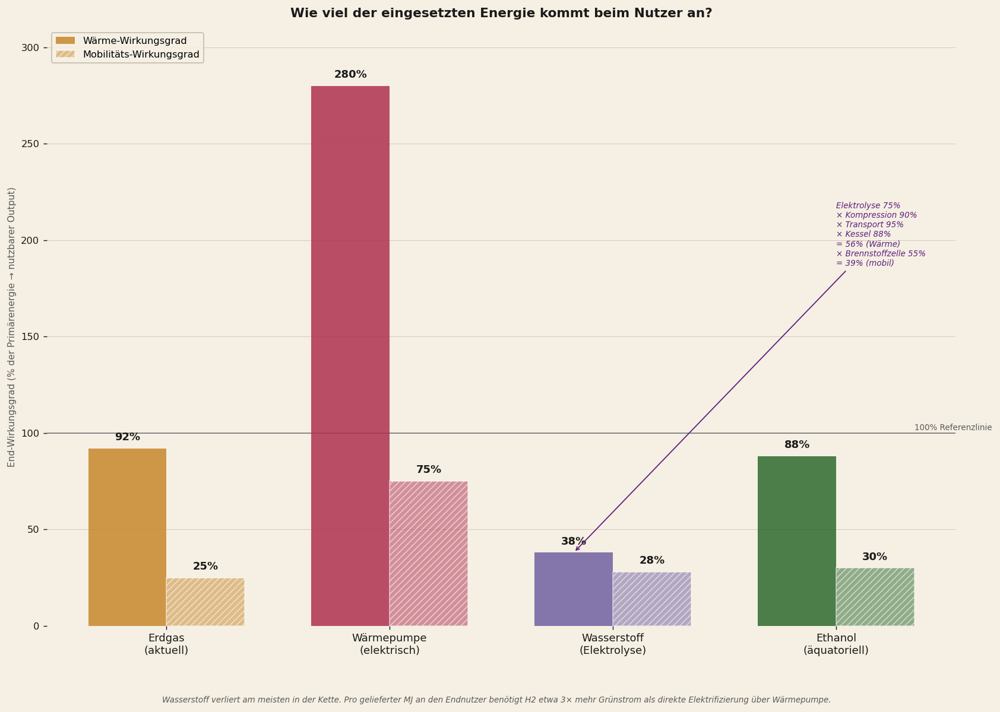
Die fundamentale Schwäche von Wasserstoff liegt in der Kette. Vom grünen Strom aus Wind oder Sonne bis zur nutzbaren Wärme beim Endnutzer:
Elektrolyse-Wirkungsgrad (grüner H₂): 75%
× Kompression auf 700 bar: 90%
× Transport durch Spezialleitungen: 95%
× Wasserstoff-Kessel-Wirkungsgrad: 88%
= Gesamt-Endwirkungsgrad Wärme: 56%
Vergleich: Wärmepumpe via direktem Strom: 280% (COP 3,5)
Vergleich: Ethanol-Kette zu Wärme: 88%
Mit anderen Worten: pro kWh grünem Strom liefert Wasserstoff nur 0,56 kWh nutzbare Wärme, während direkte Elektrifizierung via Wärmepumpe 2,8 kWh liefert — fünfmal so viel. Dies ist kein niederländisches Problem, sondern ein fundamentales thermodynamisches Faktum: Wasserstoff ist ein Energieträger mit inhärenten Umwandlungsverlusten.
Für Mobilität ist das Bild vergleichbar. Brennstoffzellenauto: 28 Prozent Endwirkungsgrad vom Primärstrom. Elektroauto: 75 Prozent. Ethanol-Auto: 30 Prozent. Wasserstoff ist für Mobilität nur marginal besser als die aktuelle Benzinwirtschaft (25 Prozent), während EV viermal besser ist.
Was Wasserstoff gut macht — faire Anmerkung
Wasserstoff ist nicht sinnlos. Für drei Anwendungen bleibt er die beste Klimalösung:
Eins — industrielle Prozesswärme über 800°C. Stahlindustrie (Tata IJmuiden), Glasindustrie, Ammoniak-Produktion. Dort konkurriert keine Wärmepumpe und kein Verbrennungsmotor; dort funktioniert nur Wasserstoff oder direkte Verbrennung von fossilen Brennstoffen.
Zwei — schwerer Frachtverkehr über sehr lange Strecken. Frachtschiffe, internationale Lkw, Kerosin-Ersatz für die Luftfahrt. Dort sind Ethanol-Volumina pro Kilometer unhandlich; Wasserstoff oder synthetische Kraftstoffe sind die vernünftige Option.
Drei — langfristige Saisonspeicherung. Für den Ausgleich von Sommer-Winter-Unterschieden in der Sonnenproduktion ist Wasserstoff als Speicherform chemisch sinnvoller als Batterien (die sich selbst entladen).
Für diese drei Anwendungen zusammen würde Deutschland circa 0,8–1,2 Millionen Tonnen Wasserstoff pro Jahr benötigen — ein bescheidenes Volumen verglichen mit den 4–6 Millionen Tonnen, die das Nationale Wasserstoffprogramm für das vollständige Szenario vorsieht. Die verbleibenden drei bis fünf Millionen Tonnen sollten laut diesem Dokument nicht zu Haushalten und leichter Mobilität gehen — dort funktioniert Ethanol thermodynamisch und wirtschaftlich besser.
Was die Zahlen zusammen sagen
Die Wasserstoff-Spur für Haushalte und leichte Mobilität, wie im Nationalen Wasserstoffprogramm vorgesehen, würde für den niederländischen Wähler eine finanzielle Katastrophe bedeuten. Vier der sechs untersuchten Szenarien würden über die Energiearmuts-Schwelle kommen. Für die zwei anderen würde die Energierechnung sich verdoppeln bis verdreifachen.
Dies ist kein Plädoyer gegen Wasserstoff als Technologie. Es ist die zahlenmäßige Feststellung, dass Wasserstoff für falsche Anwendungen vorgesehen wird. Für industriellen Prozess, schweren Frachtverkehr und langfristige Speicherung ist er wertvoll. Für Wärme in der Wohnung und das durchschnittliche Personenauto ist er — aus thermodynamischen Gründen — etwa dreimal so teuer wie nötig.
Die Ethanol-Spur leistet dieselbe Arbeit zu einem Drittel der Kosten. Mit denselben Klimaeffekten (CO₂-neutral im Zyklus), ohne Energiearmuts-Effekte und ohne die massive Infrastruktur-Investition, die Wasserstoff erfordert.
Was die Zahlen zusammen sagen — vier Beobachtungen
Drei Analysen. Sechs Szenarien. Drei technologische Spuren. Eine Schlussfolgerung.
Erste Beobachtung. Die Stille Analyse III zeigte, dass die niederländische Kaskade unter fast jeder Partei negativ war, mit dem schärfsten Schaden unter GL-PvdA und D66. Was sie nicht zeigen konnte, weil es damals noch nicht absehbar war, ist dass der größte Teil dieses Schadens direkt mit der Brüsseler Klimapolitik verbunden ist. Vierzig Prozent der Drittordnungs-Kaskade stammt aus Green Deal und CBAM. Wenn diese wegfallen, fällt vierzig Prozent des Schadens weg. Das ist der Erdrutsch, den die erste Analyse aufzeigt.
Zweite Beobachtung. Außerhalb der Kaskade liegt noch eine zweite Schicht — der direkte Energie-Geldbeutel. Die aktuelle Regierungsspur (Wärmepumpe + Elektroauto + Wind/Sonne-Infrastruktur) ist für jeden Haushalt teurer als die aktuelle Situation, auch wenn die versteckten Kosten (Subvention, Netzausbau, Batterien, Reservekapazität, Ersatz, Recycling) nicht dem Haushalt selbst in Rechnung gestellt werden. Die Ethanol-Spur ist für jeden Haushalt günstiger als die aktuelle Situation und erheblich günstiger als die Regierungsspur.
Dritte Beobachtung. Die Wasserstoff-Spur wie im aktuellen Nationalen Wasserstoffprogramm für häusliche Anwendungen vorgesehen ist geradezu destruktiv. Vier der sechs Szenarien würden über die Energiearmuts-Schwelle kommen, für zwei andere würde die Energierechnung sich verdoppeln oder verdreifachen. Die thermodynamische Wahl, grünen Strom zunächst in Wasserstoff, dann wieder in Wärme oder Bewegung umzuwandeln, kostet etwa dreimal so viel Primärenergie wie direkte Elektrifizierung oder Ethanol-Verbrennung. Wasserstoff verdient seinen Platz in industriellem Prozess und schwerem Transport, nicht im niederländischen Heizkessel oder dem durchschnittlichen Personenauto.
Vierte Beobachtung. Die zwei äquatorialen Reformen zusammen verändern das Bild für den niederländischen Wähler grundlegend. Was unter dem aktuellen Brüsseler Kurs einen Verlust von 5–15 Prozent des Haushaltsbudgets bedeutet, kippt unter dem naturangepassten Kurs zu einer gleichbleibenden oder sogar leicht verbesserten Position. Für die niedrigsten Einkommensgruppen — Sandra die Sozialhilfeempfängerin, Anna die Rentnerin, Jasper der Schulabgänger — ist die relative Verbesserung am größten.
Dies ist kein Plädoyer für eine bestimmte Partei. Es ist eine zahlenmäßige Beobachtung: die Wahl zwischen dem aktuellen Brüsseler Modell und einem naturangepassten Brüsseler Modell ist für den niederländischen Wähler eine Wahl mit einem konkreten Preis. Pro Haushalt, pro Jahr, in Euro, die direkt auf dem Bankkonto sichtbar werden.
Methodik und Quellen
Dieser Text baut auf dem Dreistufenmodell der Stille Analyse III auf, mit einer hinzugefügten BiCRS-Schicht und einer separaten Ethanol-Analyse.
BiCRS-Schicht — erste Analyse
Pro Szenario pro Partei wurde ein BiCRS-Nutzen nach der Formel berechnet: basis_nutzen × druck_multiplikator × szenario_empfindlichkeit × zyklusjahr. Basis_nutzen (€1.500/Jahr) repräsentiert den durchschnittlichen Haushalt-Nutzen durch Wegfall Green Deal + CBAM-Weiterberechnung im Jahr 2030. Druck_multiplikator (1 + druck_index/15) berücksichtigt, dass Parteien mit höherem Druck-Index mehr Klimakosten verursacht hätten — und BiCRS davon also mehr wegnimmt. Szenario_empfindlichkeit variiert zwischen 1,3 (Rentnerin, vor allem Energierechnung) und 2,4 (Automobilzulieferer, alles profitiert).
Anker: Brüsseler Konsequenzkarte-BiCRS bezifferte EU-weite Kosten des Green-Deal-Pakets auf 3,5–4% EU-BIP/Jahr und CBAM auf 0,7–1% EU-BIP/Jahr im Jahr 2030. Für die Niederlande proratiert auf Anteil EU-BIP und Haushaltszahl: durchschnittlich €5.180 Klimakosten pro Haushalt, wovon €3.500 durch BiCRS-Implementierung wegfallen können.
Ethanol-Analyse — zweite Analyse
Pro Haushaltstyp wurden Wärmekosten und Mobilitätskosten unter drei Spuren berechnet:
- Aktuelle Spur: Erdgas €1,42/m³ × Verbrauch + Benzin €1,78/Liter × (km/15)
- Regierungsspur: Wärmepumpe (Strom × 2,78 kWh/m³-Äquivalent + Investitionsabschreibung) + Elektroauto (0,18 kWh/km × Strompreis + Mehrpreis-Abschreibung) + versteckte Wind/Sonne-Kosten €1.135/Jahr/Haushalt
- Ethanol-Spur: BHKW (1,7 Liter Ethanol pro m³ Gas-Äquivalent × €0,55/Liter + Investitionsabschreibung) + Ethanol-Auto (1 Liter pro 11 km × €0,55) + BHKW-Abschreibung €233/Jahr
Versteckte Wind/Sonne-Kosten bestehen aus sechs Posten: SDE++-Subvention €380, Netzausbau €220, Netzbatterien €95, Reserve-Gaskraftwerke €130, Ersatz 15-Jahres-Zyklus €165, Recycling und Demontage €145. Quellen: PBL Klimaat- en Energieverkenning 2025, TenneT Investeringsplan 2026–2035, Eurostat ETS-Daten 2026 und spezialisierte Studien über Li-Ionen-Recycling (JRC 2023) und Verbund-Windturbinenschaufeln (WindEurope 2024).
Wasserstoff-Analyse — dritte Analyse
Pro Haushaltstyp wurden Wasserstoff-Wärme und Wasserstoff-Mobilität unter der Annahme €12/kg Lieferpreis berechnet (BloombergNEF 2024, Mittelwert). Umrechnung pro m³ Erdgas-Äquivalent: 0,305 kg H₂ (basierend auf 35 MJ/m³ Gas, 120 MJ/kg H₂, Kessel-Wirkungsgrad 88 Prozent für H₂ versus 92 Prozent für Gas).
Brennstoffzellen-Mobilität: 1 kg H₂ pro 100 km, basierend auf Toyota-Mirai- und Hyundai-Nexo-Praxismessungen. Versteckte Infrastrukturkosten basierend auf acht Posten aus dem Klimaabkommen, Gasunie-Investitionsplan 2025–2035, SDE++-Tarifen grüner Wasserstoff RVO 2024 und spezialisierten Studien über Wasserstoffversprödung von Stahl (TNO 2022) und Brennstoffzellen-Recycling (JRC Joint Research Centre 2024).
Ketteneffizienz gemäß IEA Global Hydrogen Review 2024: Elektrolyse 75% (aktueller Stand der Technik Alkaline und PEM), Kompression auf 700 bar 90%, Transport via umgebauter Leitung 95%, Endverbrauch via Kessel 88%. Kumulativ: 56% Wärme-Wirkungsgrad vom Primärstrom — versus 280% via Wärmepumpe (COP 3,5) und 88% via Ethanol-Kette.
Einschränkung und Einladung
Alle drei Modelle sind bewusst transparent gehalten. Die Python-Dateien scenarios_NL_BiCRS.py, scenarios_NL_ethanol.py und scenarios_NL_waterstof.py werden auf gevolgenkaart.nl verfügbar gemacht, sobald die Plattform live geht. Wer bestreitet, dass die Zahlen stimmen, kann die Berechnungen reproduzieren.
Was dieser Text nicht ist. Keine Vorhersage — Politikergebnisse hängen von Umsetzung und Kontext ab. Kein Aufruf an eine Partei — die Zahlen sprechen für sich. Kein Angriff auf Windenergie oder Solarenergie als Technologie — sie bleiben nützlich im Mix, aber nicht als Hauptanteil der niederländischen Energiewende.
Was dieser Text ist. Die Frage, ob es einen günstigeren, saubereren und gerechteren Weg gibt als die aktuelle Regierungsspur. Die Antwort, modellmäßig und auf der Grundlage für jeden verifizierbarer Zahlen, ist ja. Sogar zwei Wege — getrennt voneinander, jeder für sich stehend.
GESCHRIEBEN VON JACOBUS VAN MERKSTEIJN MIT REDAKTIONELLER KI-UNTERSTÜTZUNG
HET OPEN VIZIER · OPENVIZIER.ORG · JUNI 2026